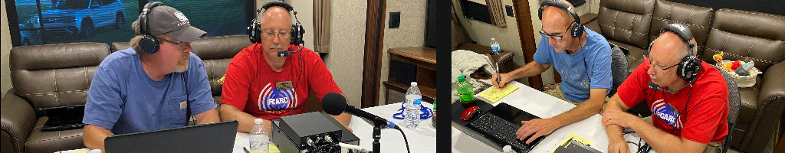
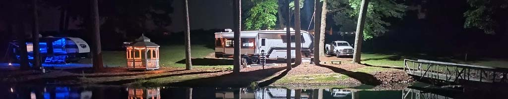
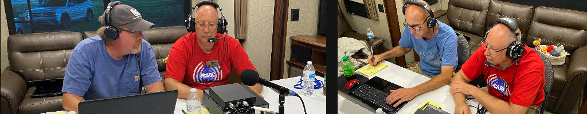
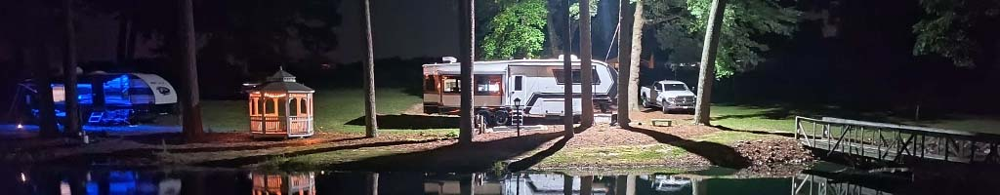

 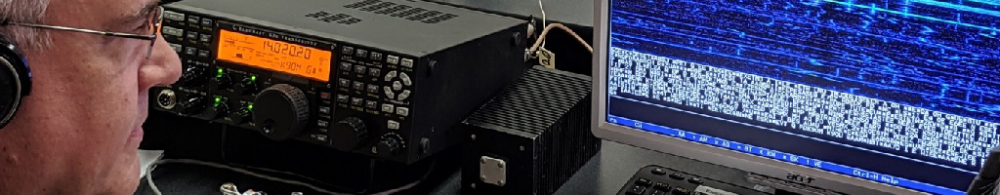
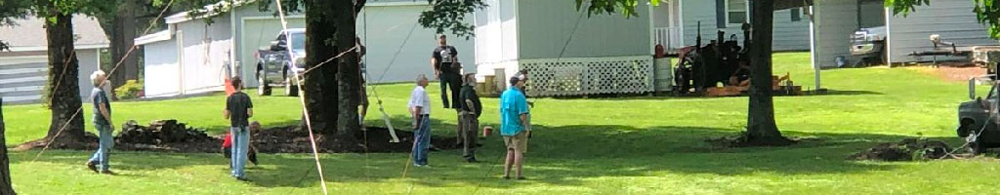
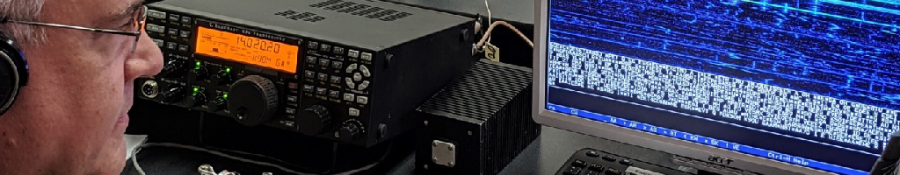
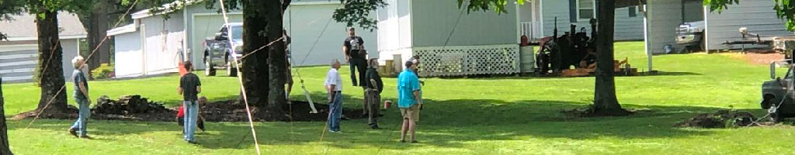


 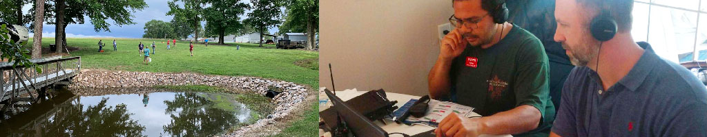
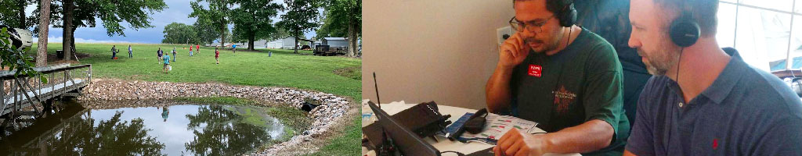
 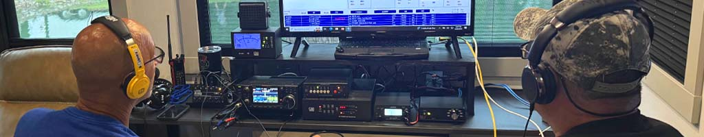
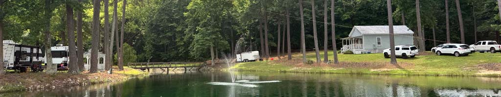
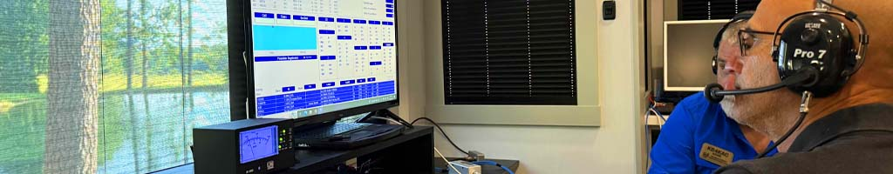
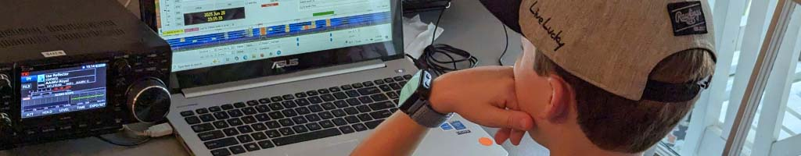
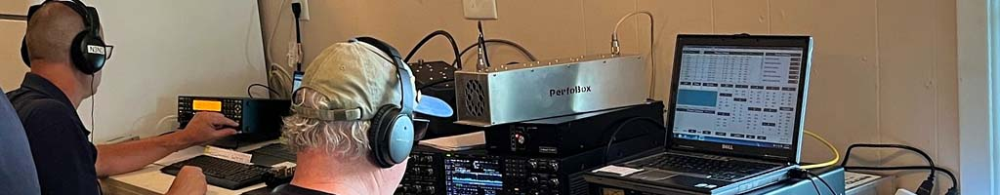
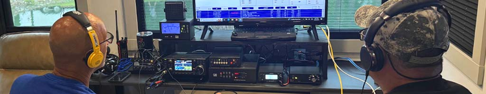
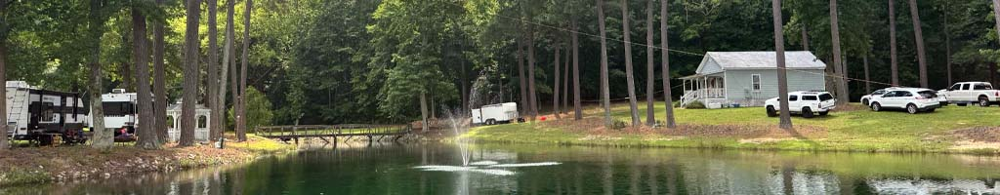
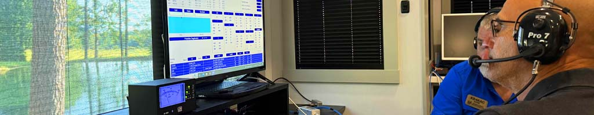
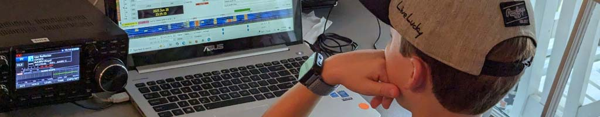
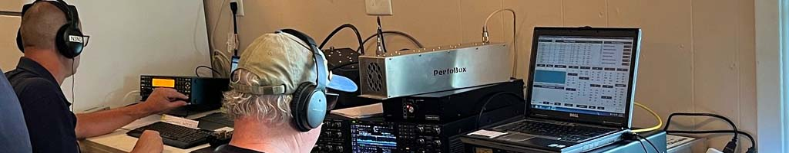
Franklin County ARC Repeaters
147.315 +
Plus
88.5
OPEN/LINKED ⇒
444.950 +
Plus
88.5
⇐ OPEN/LINKED
146.805 -
Minus
118.8
OPEN SYSTEM
146.715 -
Minus
88.5
OPEN SYSTEM
443.200 +
Plus
CC1/TS2
OPEN SYSTEM
147.210 +
Plus
DSTAR
OPEN SYSTEM
441.825 +
Plus
88.5
C4FM & FM
147.030 +
Plus
88.5
OPEN SYSTEM
444.300 +
Plus
CC1/TS2
OPEN SYSTEM
Franklin County Club Repeater Details
AA4RV 147.315 Mhz is the club's primary 2M Repeater and is located near Rolesville, NC. It is linked to the 444.950 Repeater. It is coordinated with SERA and uses the tone of 88.5. The AA4RV repeater is an open system, we invite all to use it, but ask that you follow good amateur practice while doing so!
AA4RV 444.950 Mhz is the 70CM FM club repeater and is located near Rolesville, NC with a tone of 88.5. This repeater is also an open system and linked to the 147.315 repeater.
AA4RV 146.805 Mhz is the secondary 2M club repeater and is located near Louisburg, NC with a tone of 118.8. This repeater is also an open system.
AA4RV 146.715 Mhz is the third addition to the 2M club repeaters with a tone of 88.5. This repeater is also an open system.
AA4RV 443.200 Mhz is the club 70CM DMR repeater. This repeater is connected to the internet with BrandMeister TG314049 with Color Code 1 (CC1) and Time Slot 2 (TS2) are the settings with a +5Mhz offset.
AA4RV 147.210 MHz is the DStar club repeater and is located near Louisburg, NC.
AA4RV 441.825 Mhz is the C4FM and FM Dual Mode club repeater and is located near Louisburg, NC with plus +5 Mhz offset and a tone of 88.5.
AA4RV 147.030 Mhz is an additional 2M club repeater located in Epsom in the northern part of the county, with a tone of 88.5 and a +0.6 Mhz offset. This repeater is also an open system.
AA4RV 444.300 Mhz is another club 70CM DMR repeater located in Epsom. This repeater is connected to the internet with BrandMeister TG 314595 with Color Code 1 (CC1) and Time Slot 2 (TS2) are the settings with a +5Mhz offset.